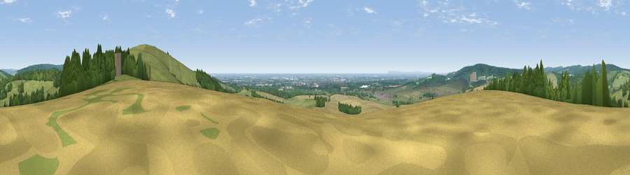

Viewpoint near West Dean
#3054 in England · top 8% of its area beats it · near West Dean · footpathWhere it is
The exact computed spot (SU 86838 10925). Click the marker for map links.
Public access: a public right of way passes within 18 m of this spot. Computed from Natural England's CRoW access layer and OpenStreetMap rights of way — not the legal definitive map. Always verify locally.
The view, rendered

A 360° render of this exact spot computed from the terrain model, tree cover and land cover — summer colours, afternoon light, calibrated against photographs of famous viewpoints. Real trees, hedges and buildings will differ in detail.
The panorama
Grey silhouette: terrain skyline in each direction (720 bearings, Earth curvature and refraction included). Dashed green: skyline with trees (+15 m) and buildings (+8 m) as obstacles. Blue strip: how far the ground is visible on each bearing.
Where the view opens
Wedge length = distance to the farthest visible ground on that bearing (vegetation-aware). Rings at 10, 25 and 50 km.
What fills the view
41% grassland · 28% woodland · 25% cropland · 3% water · 3% built-up
Angular shares of the visible panorama (visual magnitude), not map area. Landscape diversity 0.56 (0–1 Shannon).
Key numbers
More beautiful places nearby
The staircase of upgrades: each row has a higher view potential than everything closer. Driving times are estimates from straight-line distance, calibrated against real road routing — check an actual route before setting out.
| Place | Direction | Drive | Score |
|---|---|---|---|
| The Trundle | E · 1 km | ~3 min | 82.2 |
| Linch Down | NNW · 7 km | ~14 min | 85.2 |
| Beacon Hill | NW · 10 km | ~19 min | 85.8 |
| Chanctonbury Ring | E · 27 km | ~43 min | 87.0 |
| Viewpoint near St. Lawrence | SW · 47 km | ~67 min | 88.2 |
| Viewpoint near Niton | SW · 51 km | ~72 min | 89.2 |
| Viewpoint near West Bexington | W · 134 km | ~158 min | 89.5 |
| The Knoll | W · 135 km | ~159 min | 91.0 |
50.89129, -0.76673 · source: screening · position refined by local search. Computed location — check access rights before visiting.